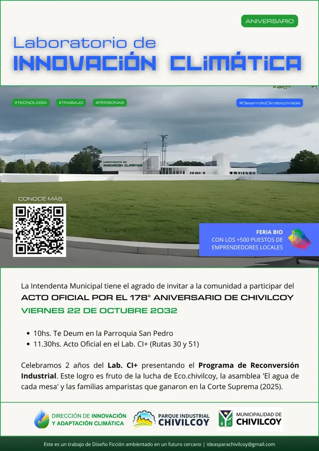
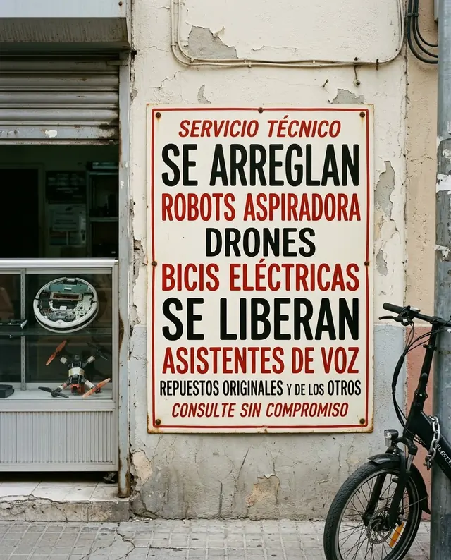

Práctica de mundanidad #01
¿Qué tiene de extraordinario tu ordinario?
Un futuro cercano, cotidiano, situado en el lugar donde estás. Un escenario de acá a poco, no de ciencia ficción, y un artefacto que lo haga tangible.
Si nunca hiciste uno, acá va la explicación corta de qué es un artefacto diegético.
Otros Futuros · Nicolás Bronzina
Qué entregás
Dos cosas. El escenario, en el largo que necesite: puede ser un párrafo. Y un artefacto diegético: un objeto que existe dentro de ese futuro como si ya hubiera llegado. Una notificación, un cartel, un formulario, una etiqueta, un ticket. Algo que alguien usaría o vería en ese mundo sin que nadie se lo explique. Digital, físico o las dos cosas. Si es físico, documentalo.
De dónde sale
Tema libre. De tu trabajo, de algo que te pasó el martes, de una incomodidad que no te podés sacar de la cabeza, de una conversación que no terminó. El único ancla es lo que te trae a este Lab: la mundanidad forzada, Latinoamérica, la diáspora, lo que vivís desde donde estás.
Imaginar desde el sur no es lo mismo si estás en Chivilcoy o en Viena. La distancia cambia lo que ves. También cambia lo que extrañás. Esa diferencia es el material.
Un ejemplo

Chivilcoy, 2032. La crisis del arsénico en el agua convirtió al pueblo en laboratorio de innovación climática. Miriam Latorre construyó el cartel y el sitio web de ese laboratorio ficticio. Ver en la bitácora →
Cómo responder
Si preferís mandarla por mail o tenés dudas antes de arrancar: escribinos →
Respuestas

Nicolás Bronzina, Madrid. Ver en la bitácora →